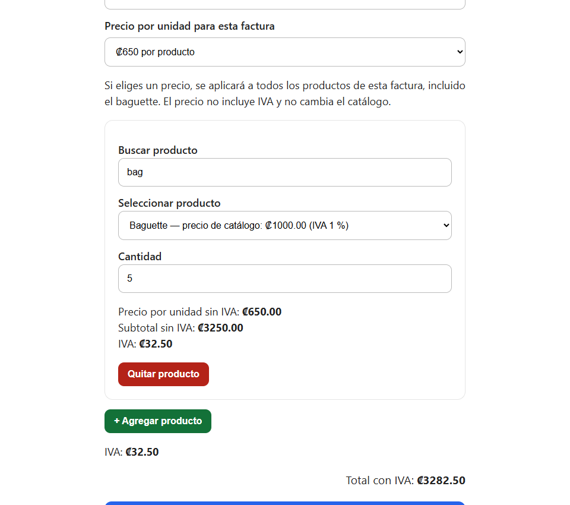
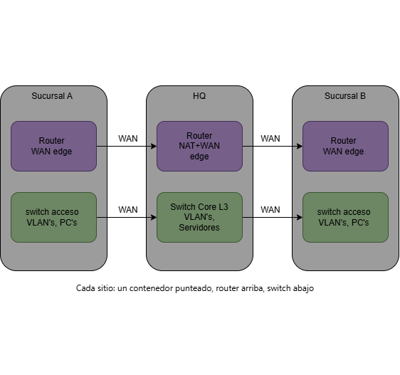

Facturación para panadería
Python · Flask · SQLite

Aplicación web para registrar ventas y organizar comprobantes de una panadería familiar. Diseñada para facilitar el trabajo diario desde computadora o celular.
Costa Rica · Disponibilidad inmediata
José Carmona Jiménez — estudiante de Ingeniería del Software en Cenfotec, con formación en redes, ciberseguridad y DevOps. Busco una pasantía o puesto junior para construir soluciones útiles y seguir creciendo profesionalmente.
Empecé explorando ciberseguridad para tener claro qué había detrás de IT antes de meterme de lleno en algo específico. Ahí aprendí Linux, máquinas virtuales y Cisco Packet Tracer, y me enganché. Después continué con el técnico en Telecomunicaciones y formación en redes de Cisco. Cuando conocí Ingeniería del Software en Cenfotec me di cuenta de que quería construir sistemas, además de asegurarlos y conectarlos. Ahora busco un lugar donde esa base de redes y seguridad sea parte real del trabajo, no un extra.
Cenfotec
Virtual Learning Academy · Formación en redes con Cisco Networking Academy
Universidad Castro Carazo · Curso de Cisco como parte del recorrido formativo
Python · Flask · SQLite

Aplicación web para registrar ventas y organizar comprobantes de una panadería familiar. Diseñada para facilitar el trabajo diario desde computadora o celular.
Java · Spring Boot · MySQL
Sistema de inventario real para la panadería de mi papá: login con roles, gestión de productos, alertas de stock bajo y registro de entradas/salidas con historial filtrable. Java + Spring Boot + MySQL.
Cisco Packet Tracer · VLAN · DHCP · ACL

Diseño de una red empresarial con sede central y dos sucursales, documentando la topología, las decisiones y los problemas resueltos.
Python · Automatización
Colección de scripts: ping scanner, port scanner, generador de contraseñas.
HTML · CSS · JavaScript
Landing page para una clínica de fisioterapia: diseño responsive, mapa interactivo de zonas del cuerpo, formulario de contacto integrado con WhatsApp.
Abierto a pasantías, proyectos y roles junior en software, redes o seguridad.
Cuéntame sobre tu equipo, proyecto u oportunidad. Puedes contactarme por correo.
Enviar correo